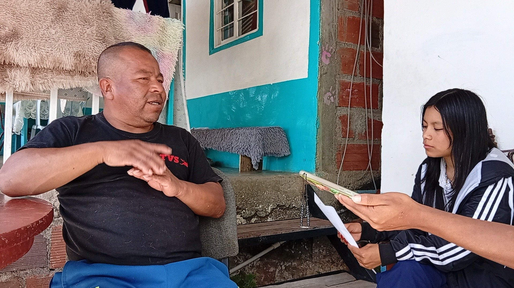
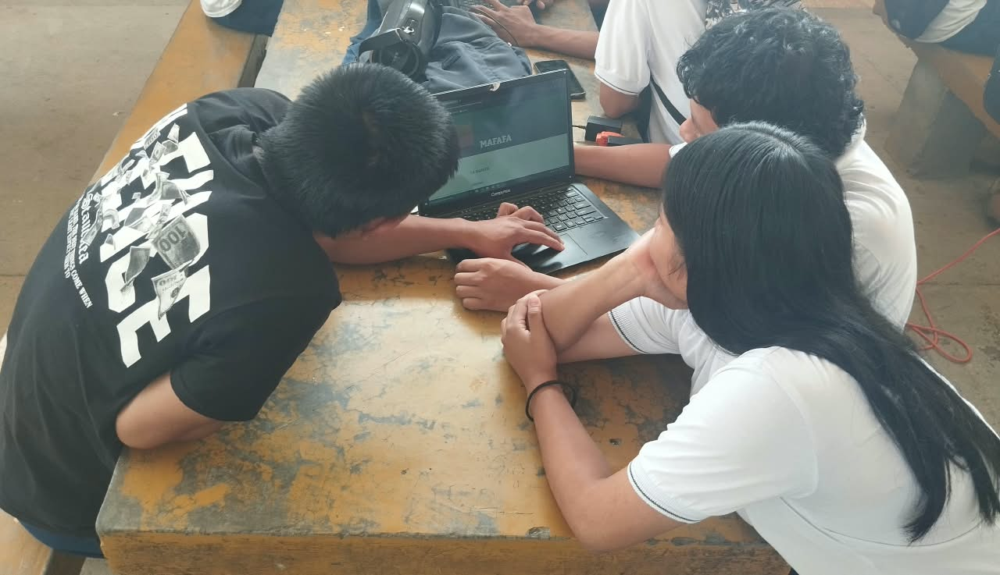

Voces de Nuestro Territorio
En este espacio compartimos las voces de las personas que nos brindaron sus conocimientos y experiencias sobre la soberanía alimentaria. Sus testimonios nos permiten conocer las tradiciones y los saberes de San Lorenzo.
Nuestros entrevistados

Orlando Betancourt
Nos comparte sus conocimientos sobre los cultivos tradicionales, las enseñanzas de sus abuelos y la importancia del maíz y el frijol.
Escuchar su testimonio

Evelio Lengua
Nos comparte sus experiencias y conocimientos sobre nuestro territorio y la importancia de conservar las tradiciones alimentarias.
Escuchar su testimonio
Las voces que conservan nuestra historia
Cada testimonio representa una parte de nuestra identidad, nuestras raíces y nuestros saberes.